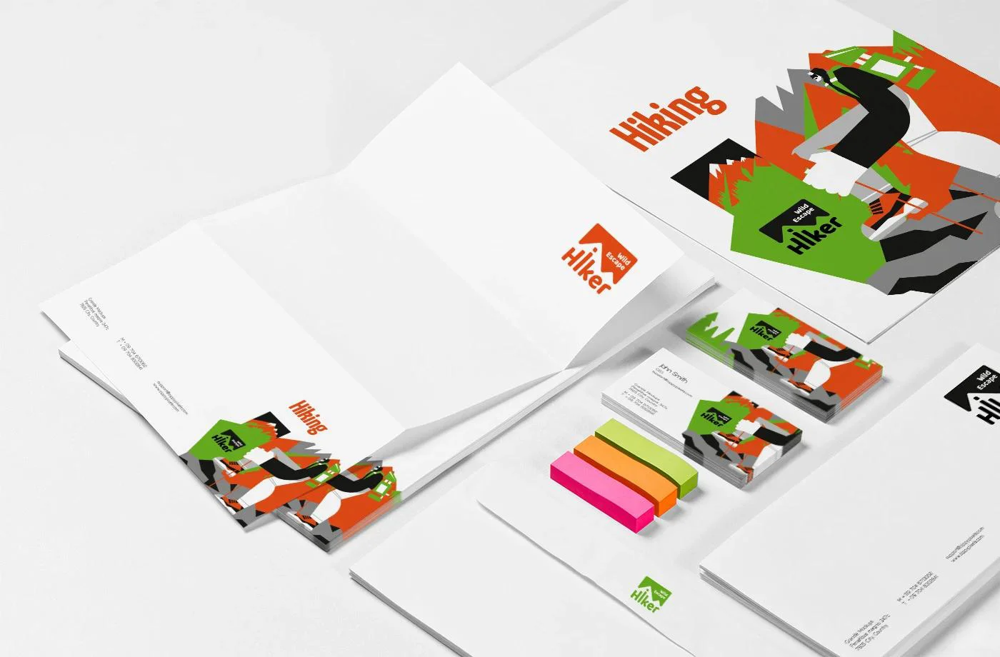
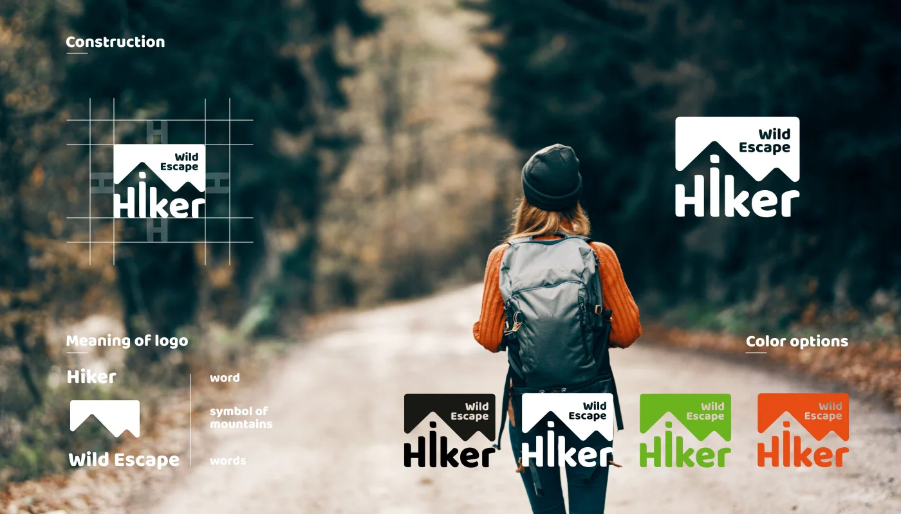
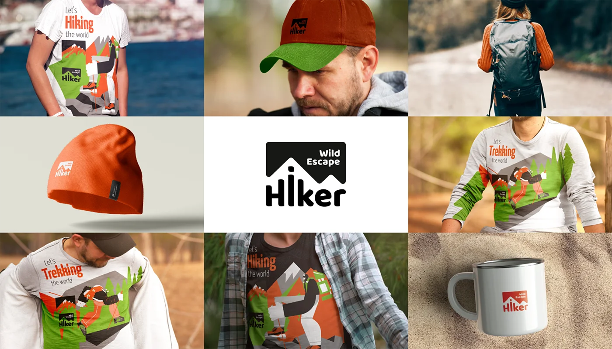
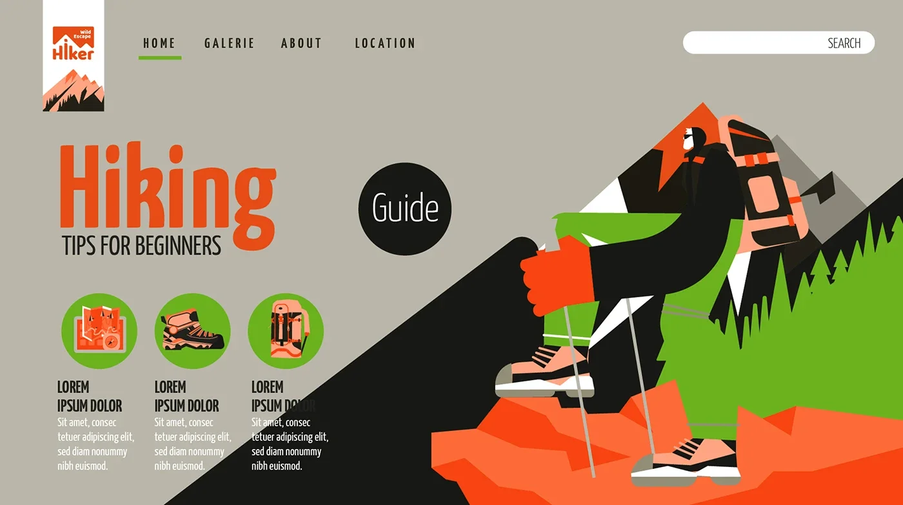

![Grafmen]()
Identyfikacja wizualna i film reklamowy
Hiker
Identyfikacja wizualna marki outdoorowej oraz film reklamowy. Od konstrukcji znaku po materiały firmowe, animację logo i produkcję wideo w plenerze.

01 / POTRZEBA
Marka blisko natury.
Hiker to marka odzieży i sprzętu turystycznego. Potrzebowała spójnej identyfikacji, która nawiązuje do natury, swobody i aktywności w terenie.
Projekt miał łączyć czytelny znak z możliwością zastosowania go w druku, internecie i materiałach filmowych.
02 / ZAKRES
Co zrobiłem
- Projekt logo i jego konstrukcji.
- Paleta kolorów oraz warianty znaku.
- Zastosowania identyfikacji na materiałach firmowych.
- Animacja logo przygotowana w After Effects.
- Produkcja filmu reklamowego w plenerze górskim.
03 / BRANDING
Identyfikacja wizualna i ruch




04 / FILM REKLAMOWY
Film promocyjny Hiker
Film reklamowy prezentujący markę Hiker w otoczeniu gór i surowej przyrody. Dynamiczne ujęcia plenerowe, gra światła i otwarta przestrzeń budują autentyczny klimat marki outdoorowej.
05 / REZULTAT
Spójna identyfikacja i jej zastosowania.
Powstał kompletny zestaw materiałów marki. Logo, kolorystyka, animacja wejściowa oraz film reklamowy tworzą spójny i wyrazisty język komunikacji w druku, internecie i wideo.